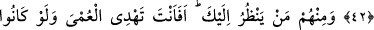
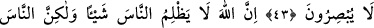
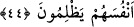
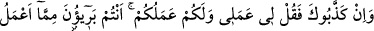

KİMİ ONA İNANIR,
KİMİ DE İNANMAZ
40. Onlardan kimi ona inanır, kimi de inanmaz. Rabb’in bozguncuları çok iyi bilir.
41. Eğer onlar seni yalanladılarsa, de ki: “Benim yaptığım bana, sizin yaptığınız
da size. Siz benim yaptığımdan uzaksınız, ben de sizin yaptığınızdan uzağım!”
42. İçlerinden sana kulak verip dinleyenler de vardır. Fakat sağırlara sen mi
duyuracaksın? Hele akıllarını da kullanmıyorlarsa!
43. İçlerinden sana bakanlar da var. Fakat körleri sen mi yola getireceksin? Hele
bir de basiretsiz iseler!
44. Şüphesiz Allah insanlara hiç zulmetmez, fakat insanlar kendi kendilerine
zulmediyorlar.
“Onlardan” yani yalanlayanlardan “kimi ona inanır,” Kur’ân’ı içinden tasdik eder,
gerçek olduğunu bilir, fakat inat eder, “kimi de inanmaz.” Açıkça inanmadığı gibi fazla
geri zekâlı olduğu, az düşündüğü için içinden de inanmaz. Ya da onlardan kimi, imânı
kabul etme kapasitesi bulunduğu için küfürden tevbe ederek îmân edecektir, kimi de
imânı kabûle müsâid olmadığından dolayı ilerde de imân etmeyecek, bilâkis küfrü üzere
ölecektir. “Rabb’in bozguncuları” inatçıları veya ısrarcı olanları “çok iyi bilir.” Allah
Teâlâ, bu inatçıları fâsid davranışları yüzünden fıtratlarındaki istîdadlarını bozdukları
için “bozguncu” diye nitelemiştir.